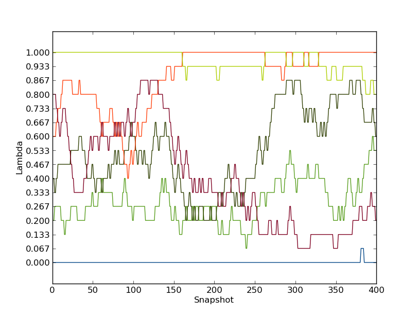
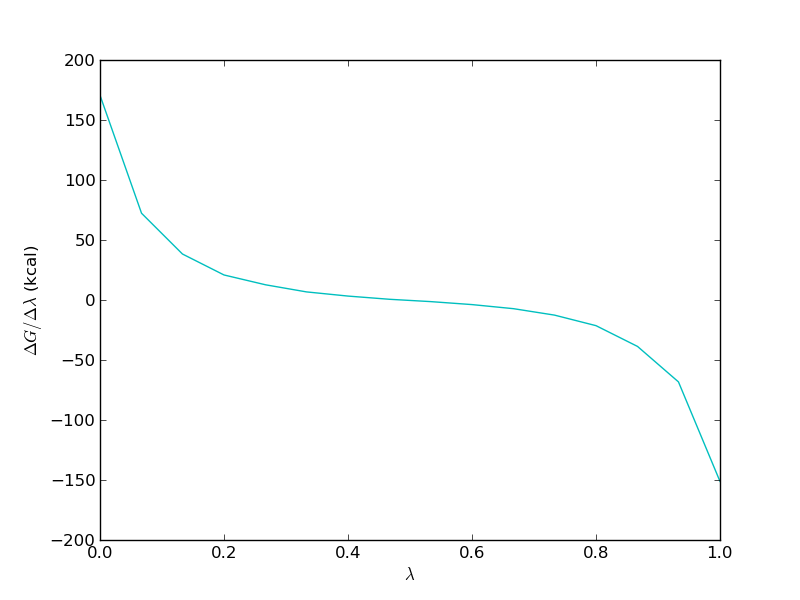

total to plot the total energy. It should look somethin like this: 
lig1.pdb - the structure of the first ligand molecule in PDB formatlig3.pdb - the structure of the second ligand molecule in PDB formatprotein.pdb - the structure of the COX2 protein in PDB format
$PROTOMSHOME/protoms.py -s dualtopology -l lig1.pdb lig3.pdb -p protein.pdb
this sets up one simulation for the bound leg and one for the free leg of the relative free energy cycle.
The simulations will run 5 m equilibration steps and 50 m production steps for each of the 16 λ-values. Output will be printed to files every 100 k moves and Hamiltonian replica-exchanges between neighbouring λ-values will be attempted every 200 k moves.
the -s dualtopology argument tells the script to setup a dual topology free energy simulation and/ The -p and -l arguments specifies the protein and the ligands, respectively.
You can read more about the files that the setup script creates further down on this page.
You can visualise the systems that will be simulated with for instance VMD:
vmd -m lig1.pdb lig3.pdb lig1_box.pdb vmd -m lig1.pdb lig3.pdb protein_scoop.pdb water.pdb
mpirun -np 16 $PROTOMSHOME/protoms3 run_bnd.cmd
mpirun -np 16 $PROTOMSHOME/protoms3 run_free.cmd
This is most conveniently done on a computer cluster. The calculations will take approximately 48 h to complete.
$PROTOMSHOME/tools/calc_series.py -f out_free/lam-0.000/resultsto look at time series for the free leg at λ=0.0. In the wizard that appears you can type
gradient followed by enter. This will plot the numerical gradient as a function of simulation snapshot. It should look something like this:
Run the program again by this time type total to plot the total energy. It should look somethin like this:
Next, we will analyse how effect this λ replica exchange was. Type
$PROTOMSHOME/tools/calc_replicapath.py -f out_free/lam-*/results -p 0.0 0.067 -o replica_path_free.png
to plot the path of the first two λ-values. It should look something like this.

as is clear, these two replicas was not able to traverse the full λ-space within the simulation time. Hence, the replica exchange was not fully efficient.
Now, we will estimate the free energy. We will do this both with thermodynamic integration and Bennet's acceptance ratio (BAR). To do this you can type
$PROTOMSHOME/tools/calc_ti.py -d out_free/ -s 100 $PROTOMSHOME/tools/calc_bar.py -d out_free/ -s 100
A typical result is about -0.5 kcal/mol. Notice that 100 snapshots are removed from the 400 snapshots when calculating the free energy, because the analysis with calc_series.py indicated that the simulation was equilibrated from approximately this point.
It is important to study the gradient of the TI calculation. It should be smoot in order for the TI to work properly. For the free leg it should look something like this

Now, we need to repeat the analysis for the bound leg. You will notice that the equilibration of this simulation is much worse. The computed free energy should be around -1.1 kcal/mol (depending on TI or BAR and equilibration removed). This gives a relative binding free energy of about -0.5 kcal/mol.
H H H DU
| / | /
Ligand 3 : R-C-C--H ==> R-C-H--DU : Ligand 1
λ=0.0 | \ | \ λ=1.0
H H H DU
To setup this simulation type:
$PROTOMSHOME/protoms.py -s singletopology -l lig3.pdb lig1.pdb -p protein.pdb
during the setup you will be prompted to type in the atoms in ligand 1 that corresponds to which atoms in ligand 3. For C38 you should type H38 and for the 3 methyl hydrogens H43, H41, H42 you just leave blank to indicate that they should be perturbed to dummy atoms.
As with dual-topology, this sets up simulations for the bound leg and the free leg of the relative free energy cycle.
The simulations will run 5 m equilibration steps and 50 m production steps for each of the 16 λ-values. Output will be printed to files every 100 k moves and Hamiltonian replica-exchanges between neighbouring λ-values will be attempted every 200 k moves.
mpirun -np 16 $PROTOMSHOME/protoms3 run_ele_bnd.cmd
mpirun -np 16 $PROTOMSHOME/protoms3 run_vdw_bnd.cmd
mpirun -np 16 $PROTOMSHOME/protoms3 run_ele_free.cmd
mpirun -np 16 $PROTOMSHOME/protoms3 run_vdw_free.cmd
This is most conveniently done on a computer cluster. The calculations will take approximately 48 h to complete.
protoms.py as above, you accept the standard number of λ-values, simulation length etcs. The values of these parameter were chosen from experience and should work for most systems. However, there are situations when you want to do something else. Here, we will go through some of the many available options. To know about other options you have to read the manuals for the tools or the MC program. You might also have to setup your system by executing the individual tools separately.
--nequil - this controls the number of equilibration steps--nprod - this controls the number of production steps
$PROTOMSHOME/protoms.py -s dualtopology -l lig1.pdb lig3.pdb -p protein.pdb --nequil 10E6 --nprod 50E6
you will run 10 m equiliration steps and 50 m production steps (instead of the 5 m and 40 m that is default)
--lambdas.
by typing for instance
$PROTOMSHOME/protoms.py -s dualtopology -l lig1.pdb lig3.pdb -p protein.pdb --lambdas 24
you will initiate 24 λ-values rather than default 16. You can also give individual λ-values to the argument. For instance
$PROTOMSHOME/protoms.py -s dualtopology -l lig1.pdb lig3.pdb -p protein.pdb --lambdas 0.000 0.033 0.067 0.133 0.200 0.267 0.333 0.400 0.467 0.533 0.600 0.667 0.733 0.800 0.867 0.933 0.967 1.000
will add two new λ-values at 0.033 and 0.967 to the 16 created by default.
--repeats or just -r.
by typing for instance
$PROTOMSHOME/protoms.py -s dualtopology -l lig1.pdb lig3.pdb -p protein.pdb -r 5
you will create 5 input files for the bound leg and 5 input files for the free leg. Therefore, you also need to execute ProtoMS 10 times with the different input files. The output will be in 10 different folders, e.g. out1_bnd and out2_bnd.
lig1.prepi and lig3.prepi = the z-matrix and atom types of the ligands in Amber formatlig1.frcmod and lig3.frcmod = additional parameters not in GAFFlig1.zmat and lig3.zmat = the z-matrix of the ligands used to sample it in the MC simulationlig1.tem and lig3.tem = the complete template (force field) file for the ligands in ProtoMS formatprotein_scoop.pdb = the truncated protein structure
lig1_box.pdb = the box of water solvating ligand 1 in the free leg simulationlig3_box.pdb = the box of water solvating ligand 3, this box will not be usedwater.pdb = the cap of water solvating the protein-ligand system in the bound leg simulationFor the dual-topology simulations the following files are created:
li1-li3.tem = the combined template file for the two ligands, used only in this simulationrun_bnd.cmd = the ProtoMS command file for the bound-leg simulationrun_free.cmd = the ProtoMS command file for the free-leg simulationFor the single-topology simulations the following files are created:
li3tli1_ele.tem = the template file for electrostatic perturbation, used only in this simulationli3tli1_vdw.tem = the template file for van der Waals perturbation, used only in this simulationsingle_cmap.dat = the atom correspondence maprun_ele_bnd.cmd and run_vdw_bnd.cmd = the ProtoMS command files for the bound-leg simulationrun_ele_free.cmd and run_vdw_free.cmd = the ProtoMS command file for the free-leg simulation
lambdare 200000 0.000 0.067 0.133 0.200 0.267 0.333 0.400 0.467 0.533 0.600 0.667 0.733 0.800 0.867 0.933 1.000
this section, which exists in all input file setup the λ-replica exchange. You can add more λ-values manually if there are regions where the simulation is not performing well.
In the command files for dual-topology simulations, the following lines exist
dualtopology1 1 2 synctrans syncrot
softcore1 solute 1
softcore2 solute 2
softcoreparams coul 1 delta 0.2 deltacoul 2.0 power 6 soft66
protoms.py
HEADER LI1 and can be added by typing
sed -i "1iHEADER LI1" lig1.pdb
$PROTOMSHOME/tools/ambertools.py -f lig1.pdb -n LI1and this will execute the AmberTools programs
antechamber and parmchck, creating the files lig1.prepi and lig2.frcmod, respectively.
$PROTOMSHOME/tools/build_template.py -p lig1.prepi -f lig1.frcmod -o lig1.tem -n LI1this will creates the files lig1.tem containing the ProtoMS template file and lig1.zmat. It is a good idea to check this files to see if the script has defined the molecule properly.
cat lig1.pdb lig3.pdb > temp3.pdband then we will create a water box of TIP4P water molecules around this pdb file. Type
$PROTOMSHOME/tools/solvate.py -b $PROTOMSHOME/data/wbox_tip4p.pdb -s temp.pdb -o lig1_box.pdbthis will solvate both ligands using standard settings, i.e. it will be 10 A between the solute and the edge of the box. A pre-equilibrated box of TIP4P water molecules located in
$PROTOMSHOME/data/ is used. The box is written to the file lig1_box.pdb.
We need to combine the template files for the two ligands using
$PROTOMSHOME/tools/merge_templates.py -f lig1.tem lig3.tem -o li1-li3.tem
creating li1-li3.tem.
For single-topology, we need to create template files for the electrostatic and van der Waals perturbation. This is done by
$PROTOMSHOME/tools/make_single.py -t0 lig3.tem -t1 lig1.tem -p0 lig3.pdb -p1 lig1.pdb -o li3tli1
Just as when using protoms.py you will be prompted to type in the corresponding atoms in the two molecules. This tool will create li3-li1_ele.tem, li3-li1_vdw.tem, and li3-li1_cmap.dat
Now we have all the files to run the free-leg of the simulation. The input file for ProtoMS will be created when we have prepared to bound-leg.
$PROTOMSHOME/tools/convertatomnames.py -p protein.pdb -o protein_pms.pdb -s amber -c $PROTOMSHOME/data/atomnamesmap.dat
The converted structure will be in protein_pms.pdb. This execution assumes that the Amber naming convention is used in protein.pdb.
$PROTOMSHOME/tools/convertwater.py -p protein_pms.pdb -o protein_pms_t4p.pdb
creating protein_pms_t4p.pdb.
$PROTOMSHOME/tools/scoop.py -p protein_pms_t4p.pdb -l temp.pdb -o protein_scoop.pdb
The protein scoop is centred on the two ligand molecule and all residue further than 20 A are cut-away. The scoop is written to protein_scoop.pdb
$PROTOMSHOME/tools/solvate.py -b $PROTOMSHOME/data/wbox_tip4p.pdb -s temp.pdb -pr protein_scoop.pdb -o water.pdb -g droplet
this will create a droplet with 30 A radius centred on the benzene molecule. The droplet is written to water.pdb
solvate.py script adds the crystallographic waters from the scoop to the droplet. Therefore, we need to remove them from the scoop PDB-file.
sed -i -e "/T4P/d" -e "/TER/d" protein_scoop.pdb
Now we have all the files need to run the simulation. As you noticed, this step-by-step procedure create a few files that protoms.py does not generate.
$PROTOMSHOME/tools/generate_input.py -s dualtopology -p protein_scoop.pdb -l lig1.pdb lig3.pdb -t li1-li3.tem -pw water.pdb -lw lig1_box.pdb -o run
creating run_bnd.cmd and run_free.cmd
$PROTOMSHOME/tools/generate_input.py -s singletopology -p protein_scoop.pdb -l lig3.pdb -t li3tli1_ele.tem -pw water.pdb -lw lig1_box.pdb -o run_ele --outfolder out_ele $PROTOMSHOME/tools/generate_input.py -s singletopology -p protein_scoop.pdb -l lig3.pdb -t li3tli1_vdw.tem -pw water.pdb -lw lig1_box.pdb -o run_vdw --outfolder out_vdw
creating run_ele_bnd.cmd, run_ele_free.cmd, run_vdw_bnd.cmd and run_vdw_free.cmd